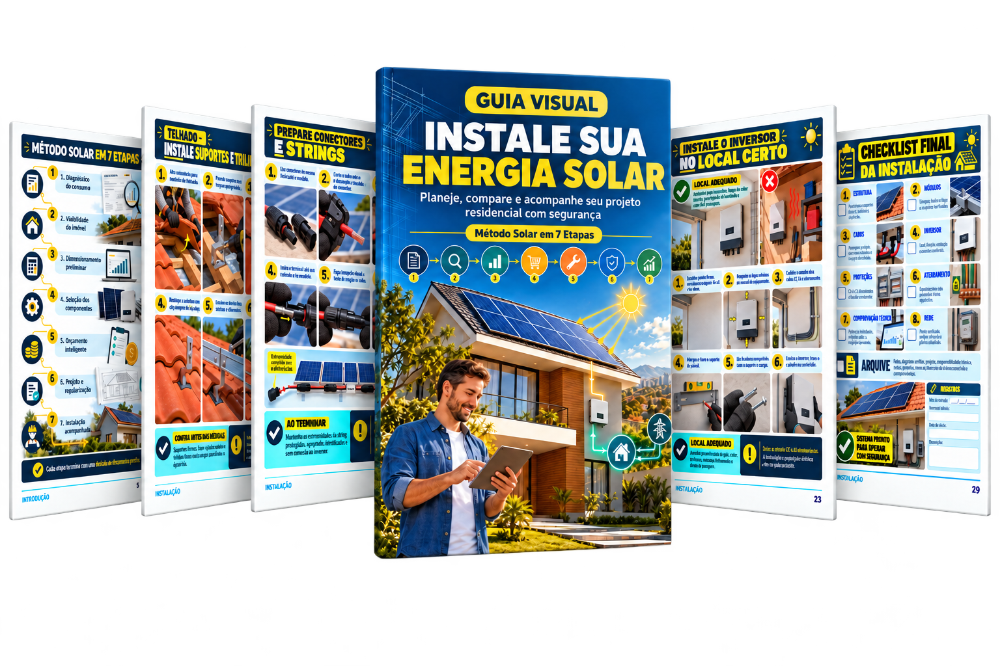
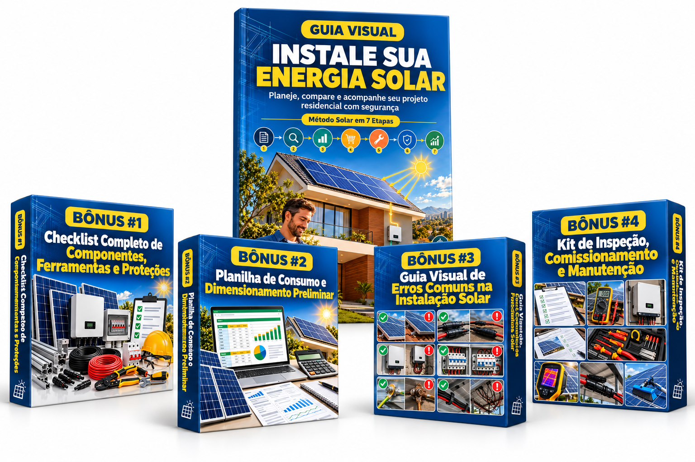
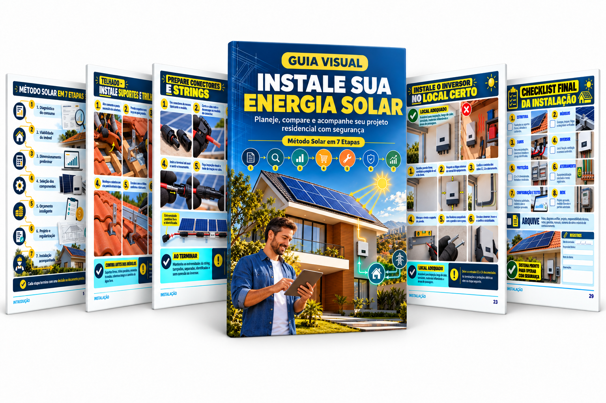
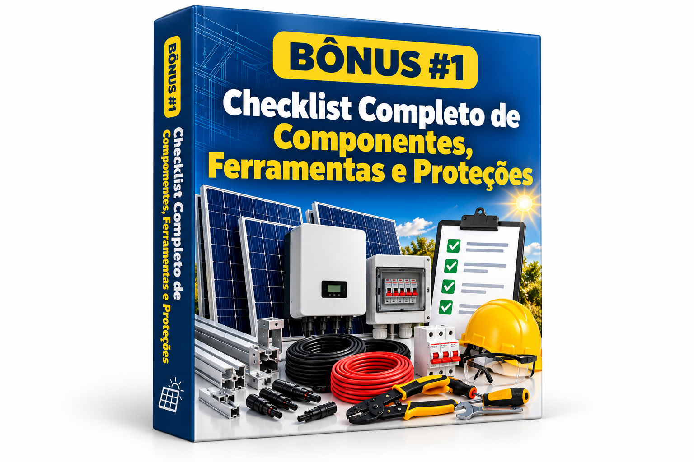
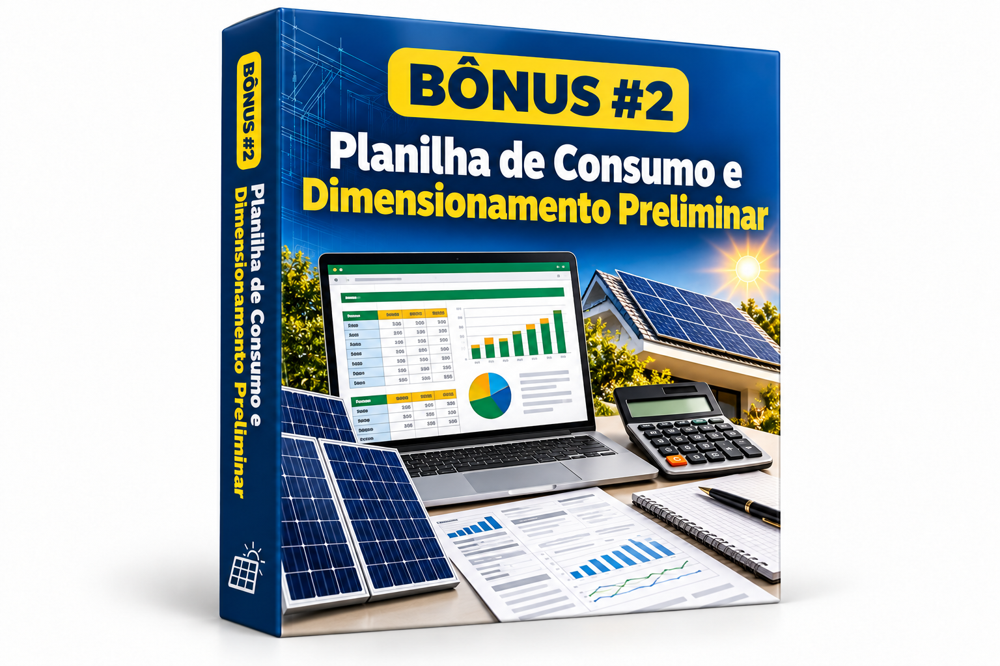
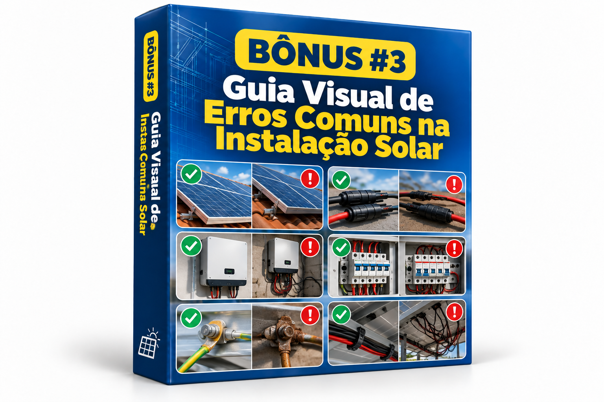
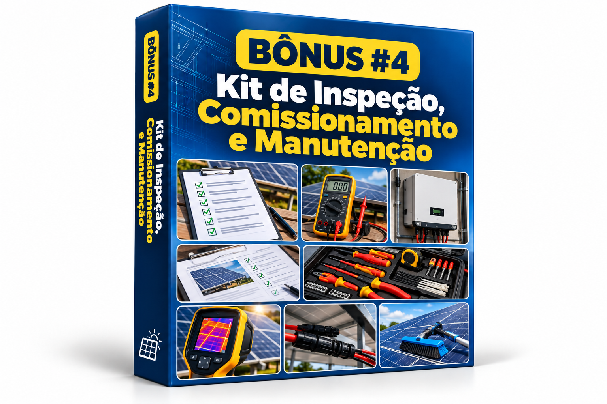

Instalação completa organizada em sequência
Acompanhe o processo do planejamento à geração, sem precisar reunir uma parte da explicação em cada vídeo, manual ou anotação.
CONHEÇA TODOS OS COMPONENTES E VEJA, PASSO A PASSO, COMO MONTAR, CONECTAR, CONFIGURAR, TESTAR E MONITORAR O SISTEMA

Preparação do local, estrutura de fixação, módulos, cabos, conectores, inversor, proteções, aterramento, configuração e testes organizados em uma única sequência visual. Você abre no celular, acompanha a etapa que está executando e visualiza como cada componente participa da instalação completa.
PESSOAS QUE DESEJAM COMPREENDER A INSTALAÇÃO SOLAR COMPLETA E SABER O QUE FAZER EM CADA ETAPA

Acompanhe o processo do planejamento à geração, sem precisar reunir uma parte da explicação em cada vídeo, manual ou anotação.
Visualize módulos, inversor, estruturas, cabos, conectores, quadros, proteções, aterramento, sinalização e monitoramento dentro do sistema.
Entenda onde cada item é instalado, como a estrutura recebe os módulos e como os circuitos chegam ao inversor e ao quadro do imóvel.
Depois da montagem, siga a sequência de configuração e conferência para verificar a ativação, a comunicação e o funcionamento do sistema.
Tenha em um único material a instalação de energia solar organizada do início ao fim. Pare de perder tempo procurando uma etapa no vídeo, outra no manual e outra em anotações espalhadas.
Com o processo separado por etapas, você pode abrir o guia, localizar o trabalho que está executando e consultar diretamente os componentes, a montagem, as conexões, a configuração e os testes antes de concluir a instalação.
QUERO GARANTIR MEU ACESSO →Visualizar a instalação completa e seguir uma ordem clara sem precisar montar o processo a partir de informações soltas.
Identificar rapidamente os componentes, as ferramentas, os pontos de fixação, as proteções e o caminho dos cabos.
Compreender a montagem da estrutura, a fixação dos módulos, a instalação do inversor e a organização dos circuitos.
Configurar, testar, monitorar e conferir o funcionamento antes de finalizar a instalação.
ACESSO IMEDIATO

E MUITO MAIS…
QUERO RECEBER O GUIA VISUAL →Você recebe o acesso após a confirmação do pagamento diretamente no seu WhatsApp e no seu e-mail.
E não para por aí… você também recebe 4 bônus especiais
Se comprar depois, não ganha
Uma lista organizada para conferir módulos, inversor, estruturas, fixadores, cabos, conectores, quadros, dispositivos de proteção, aterramento, sinalização, ferramentas e equipamentos de proteção antes de iniciar o serviço.

Uma planilha prática para organizar o consumo, estimar a necessidade de geração, registrar a potência do sistema e conferir a compatibilidade inicial entre módulos e inversor.

Pontos de atenção para ajudar a identificar falhas de alinhamento, fixação, polaridade, organização dos cabos, ventilação do inversor, proteção, aterramento, configuração e monitoramento.

Fichas prontas para registrar os equipamentos, as conexões, as configurações, os testes, a condição final do sistema e as próximas inspeções, mantendo um histórico organizado da instalação.
OFERTA VÁLIDA POR TEMPO LIMITADO
E receba instantaneamente no seu WhatsApp e e-mail
Receba direto no seu WhatsApp e e-mail
QUERO APROVEITAR✓ TODOS OS BÔNUS INCLUSOS
Receba direto no seu WhatsApp e e-mail
QUERO APROVEITARVocê terá 7 dias para acessar e avaliar o material. Caso o guia não ajude você a visualizar os componentes, compreender a sequência da instalação e acompanhar as etapas apresentadas, basta solicitar o reembolso dentro do prazo da garantia e devolveremos o valor pago.
(PASSO A PASSO)
Você finaliza a compra de forma segura.
Receba o acesso na hora, direto no seu WhatsApp e no seu e-mail.
O material é liberado após a confirmação do pagamento.Baixe e visualize o material.
Você poderá:Tire suas dúvidas antes de garantir o seu material
O acesso é enviado após a confirmação do pagamento para o WhatsApp e o e-mail informados na compra.
Sim. O conteúdo segue uma sequência visual e possui uma organização por etapas para facilitar a consulta durante o serviço.
O foco é o processo completo, desde o planejamento e a preparação até a montagem, as conexões, a configuração, os testes e o monitoramento.
Sim. Essas etapas fazem parte da sequência apresentada no material.
Sim. O guia organiza os componentes e mostra como eles participam do sistema.
Sim. O processo inclui a configuração inicial, a conferência do funcionamento e a preparação do monitoramento.
Sim. A lógica acompanha o caminho completo: planejar, dimensionar, separar, preparar, montar, conectar, proteger, configurar, testar e monitorar.
Sim. O material foi pensado para pessoas com perfil prático ou técnico que desejam compreender a instalação fotovoltaica.
Sim. O conteúdo é visual e pode ser usado para aprender, acompanhar ou conferir as etapas, respeitando a qualificação exigida em cada atividade.
Não. As orientações devem ser conferidas de acordo com o projeto, os equipamentos, o imóvel e as condições reais da instalação.
O envio é feito após a confirmação do pagamento.
Sim. Você poderá baixar o arquivo e imprimir as páginas que desejar.
Sim. Você terá 7 dias para acessar e avaliar o material e poderá solicitar o reembolso dentro desse prazo.